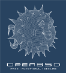

Nummer 23: das ,Wireframe Puffy'-T-Shirt
| Back |
|  |
Eine ,wireframe'-Version des immer beliebten ,wireframe'-Daemon-Shirts,
das wir Jahre zuvor erstellt haben.
Auf einem blauen T-Shirt.
Nummer 22: Das 3.6 "Ponderosa Puff" Tshirt
| Rückseite |
 |
"Gesucht" Poster für die OpenBSD Bande -- es ist schlichtweg
lächerlich, dass einige Leute verlangen, dass Dinge frei sein sollten..
Auf einem braunen Shirt.
Nummer 21: Das 3.5 "CARP" Tshirt
| Vorderseite | Rückseite |
|
|
 |
Ein redundantes Firewall Setup, das zeigt wie Puffy und CARP mit einen Firewall Failover umgehen.
"Redundancy must be free, you see?"
Nummer 20: Das 3.4 "Puffy Hood" Tshirt
| Vorderseite | Rückseite |
 |
 |
Eine ähm.... politische ... Darbietung des Puffy Hood "Arch-a-thon".
Nummer 19: Das 3.3 "Puffy the Barbarian" Tshirt
| Vorderseite | Rückseite |
|
|
 |
Die Rückseite zeigt eine Frazetta-artige Zeichnung von Ty Semaka für das "Puffy the Barbarian" Thema der OpenBSD Version 3.3. Die Vorderseite enthält ein modifiziertes Zitat aus den "Conan der Barbar" Filmen.
Nummer 18: das neue OpenSSH Tshirt
| Vorderseite | Rückseite |
|
|
 |
Das neue OpenSSH Shirt zeigt den SSHeriff in einem neuen Abenteuer.
Nummer 17: das 3.2 "Agent 077" T-Shirt
| Vorderseite | Rückseite |
 |
 |
Die Vorderseite zeigt das Motiv des 3.2 Posters. Die Rückseite zeigt Puffy, Agent 077, wie er seinen Spezialsatz "secure not stirred darling" ausspricht.
Nummer 16: Das 3.0 "Chix Dig OpenBSD" T-Shirt
| Front | Back |
 |
 |
Die Vorderseite zeigt den 3.0 CoverFish "Puffy" auf der linken Brustseite. Auf der Rückseite befinden sich Puffy und sein Gefolge.
Nummer 15: das Hostile Internet T-Shirt
| Front |
 |
Ein sicheres Betriebssystem für ein feindlich gesinntes Internet.
Diese Shirts können im Web bestellt werden sicherer Bestellung oder unsicherer Bestellung.
Nummer 14: Das girly Baby-T Shirt
| Front |
 |
Das OpenBSD Projekt erschließt ein neues Feld: der Verkauf von Baby-T shirts speziell für BSD-Geek-Girls und BSD-Geek-Freundinnen. Einfach ein T-Shirt, dass für die weibliche Form gemacht ist.
Diese Shirts können im Web bestellt werden sichere Bestellung oder unsichere Bestellung.
Nummer 13: Das 2.8 "Harisenbon" Shirt
| Front |
 |
Der andere, mit der Version 2.8 eingeführte Charakter. Als Bruder von "Sushi Fugu" von T-Shirt 12 erzählt dieser Bursche den Leuten, sie mögen von deinem Computer wegbleiben.
Diese Shirts können im Web bestellt werden sichere Bestellung or unsichere Bestellung.
Nummer 12: Das 2.8 "Sushi Fugu" Shirt
| Front |
 |
Das neue 2.8 Shirt, mit dem niedlichen 'blowfish' auf einem grauen 'flek shirt'. Wir nennen sie "Sushi Fugu".
Diese Shirts können im Web bestellt werden sichere Bestellung or unsichere Bestellung.
Nummer 11: Das Blowfish Polo Shirt
| Vorderseite |
 |
Ein sehr klassisches Polo-Shirt mit dem oben abgebildeten Stickbild. Die Stickerei wird etwa 6 cm Durchmesser haben.
Diese Shirts können im Web bestellt werden sichere Bestellung or unsichere Bestellung.
Nummer 10: Das "Three Head" Shirt
| Vorderseite |
 |
Ein schwarzes T-Shirt mit den drei OpenBSD Köpfen darauf, was dem OpenBSD 2.3 Shirt ähnelt.
Diese Shirts können im Web bestellt werden Sichere Bestellung oder unsichere Bestellung.
Nummer 9: Das OpenSSH Shirt
| Vorderseite | Rückseite |
 |
 |
Eine schönes, dunkelgrünes T-Shirt - auf der Rückseite der blowfish SSHeriff, der die alten unsicheren Protokolle begräbt, und auf der Vorderseite "SSH - Don't tell anyone it's free!" Wenn du nichts mit diesem Spruch und dem Shirt anfangen kannst, sieh einfach auf der OpenSSH web page nach.
Diese Shirts können im Web bestellt werden: sichere Bestellung oder unsichere Bestellung.
Nummer 8: Das 2.6 Fishbowl Shirt
| Vorderseite | Rückseite |
 |
 |
Auf der Rückseite guckt Script Kittie vom OpenBSD 2.6 Cover in das Fischglas, und auf der Vorderseite steht "armed to the gills" (bewaffnet bis auf die Kiemen) mit dem 'ramblo' Kugelfisch. Dieses T-Shirt besteht aus gelbem Stoff. (Hinweis: Die XXXL Shirts sind aus einem anderen Material, sie sind leuchtend gelb.)
Diese T-Shirts können im Web bestellt werden: sichere Bestellung oder unsichere Bestellung.
Nummer 7: Das Crypto Globe Shirt
| Vorderseite | Rückseite |
 |
 |
Der OpenBSD 'ramblo' Kugelfisch mit 'Make Crypto Not Munitions' ist auf der
Vorderseite. Eine Weltkarte in Bezug auf die Kryptologiegesetze auf der
Rückseite, mit einem Zitat vom Gründungsvater der USA, Benjamin Franklin.
Momentane Versionen dieses T-Shirts sind aus blauem "tie dye" Material, bis auf XXXL.
Zukünftige Versionen werden 'navy blue' sein.
Wenn du die Aussage, die auf diesem T-Shirt gemacht wird, nicht verstehst, solltest du
vielleicht das hier lesen
, einen Artikel von
Wendy McElroy .
Diese Shirts können im Web bestellt werden: sichere Bestellung oder unsichere Bestellung.
Nummer 6: Das OpenBSD 2.5 Shirt
| Vorderseite | Rückseite |
 |
 |
Dieses T-Shirt ist aus einem fleckig-grauen Material gemacht.
Diese Shirts können im Web bestellt werden:
sichere Bestellung oder
unsichere Bestellung.
Nummer 5: Das OpenBSD/OpenBSE Shirt
| Vorderseite | Rückseite |
 |
 |
Die Vorderseite enhält das originale OpenBSD "Open the Daemon" (Öffne den Daemon) Bild. Das Bild auf der Rückseite entstand nachdem einer der Entwickler seiner Mutter erzählt hatte, er arbeite an OpenBSD -- und sie missverstand ihn und glaubte er meine BSE -- Bovine Spongiform Encephalopathy (Rinderseuche).
Dieses T-Shirt ist aus weissem Material.
Diese Shirts können im Web bestellt weren:
sichere Bestellung oder
unsichere Bestellung.
Nummer 4: Das Blowfish Shirt
| Vorderseite |
 |
Auf der Vorderseite ist ein Bild des Kugelfisches, und eine vage Beschreibung, wie die Benutzung von Blowfish unseren Passwortalgorithmus sicherer macht. (blowfish, not babbblefish) Keiner wird mehr in der Lage sein, deine Passwörter zu knacken.. Die Rückseite enthält den kompletten Quellcode von unserer Version des Blowfish- Algorithmus (in Deutschland geschrieben). Mehr Informationen gibt es auf der Kryptographie Seite...
Dieses T-Shirt besteht aus weissem Material.
Diese T-Shirts können im Web bestellt werden:
sichere Bestellung oder
unsichere Bestellung.
Nummer 3: Das Daemon Polo Shirt
| Vorderseite |
 |
Diese T-Shirts hatten einen Daemon im OpenBSD-Stil auf der rechten Brustseite. Die Shirts waren aus richtig gutem grünem Stoff.
AUSVERKAUFT: Es gibt keine mehr.
Nummer 2: Das wire-frame Shirt
| Vorderseite |
 |
Diese Shirts wurden auf der Defcon VI (31. Juli - 2. Aug, 1998. Las Vegas, Nevada, USA verkauft, der LISA '98, 6-11. Dezember, 1998. Boston, Massachusetts, und auf der Reflections/Projections Konferenz in Urbana, IL, USA.
Das Drahtgeflecht-Bild auf dem Shirt hat eine erstaunliche Struktur.
Es gibt T-Shirts in Marineblau, Camo grün und schwarz.
Diese T-Shirts können im Web bestellt werden:
sichere Bestellung oder
unsichere Bestellung.
Nummer 1: Das Red Head Shirt
| Vorderseite |
 |
Diese weißen Shirts wurden auf der Usenix in New Orleans, 15.-19. Juni, 1998 verkauft. AUSVERKAUFT: Es gibt keine mehr. neue produzieren.
{kind=link}